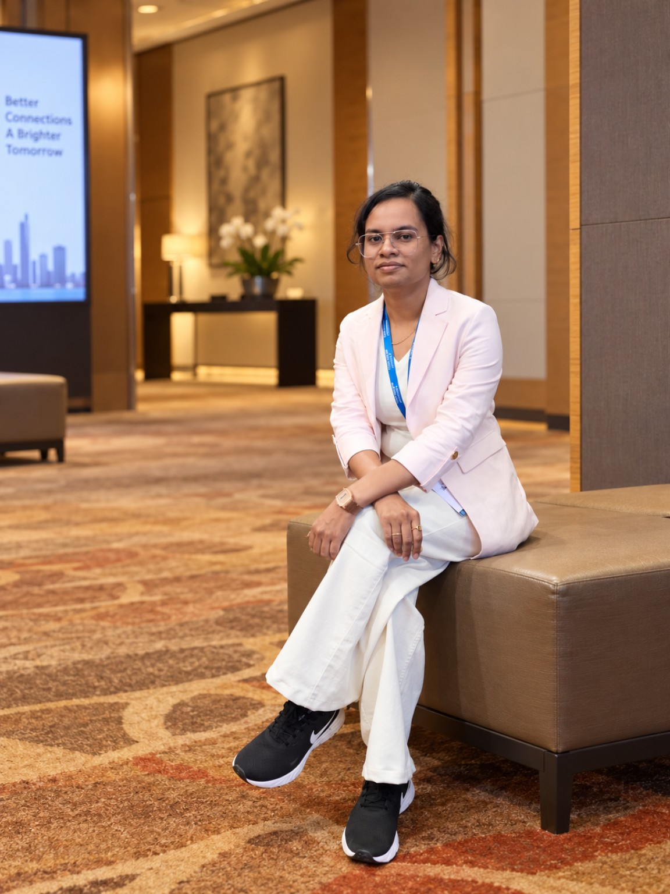

Minerva Priyadarsini
Ph.D. Candidate
School of Electrical Sciences · Indian Institute of Technology Goa
I work on advanced multiple access, finite-alphabet communications, and physical-layer signal processing, with research spanning RSMA/SCMA integration, MIMO-OFDM systems, codebook optimization, receiver design, and performance analysis.

From SCMA codebooks to rate-splitting integration
My doctoral research develops along a connected path: sparse codebook design, MIMO-SCMA optimization, hybrid RS-SCMA, and wideband OFDM-based RS-SCMA.
SCMA Codebook Design & Optimization
Differential-evolution-based codebook construction for sparse code multiple access.
MIMO-SCMA Codebook Design
Joint optimization of sum-rate and error performance in MIMO-SCMA systems.
Hybrid RS-SCMA
Integration of rate-splitting and SCMA for spectrally efficient, high-overloading multiple access.
OFDM RS-SCMA
Wideband extension with subcarrier mapping, frequency diversity, Doppler, and carrier-frequency offset.
IEEE Transactions on Communications
Hybrid Rate-Splitting and Sparse Code Multiple Access (RS-SCMA): Design and Performance
M. Priyadarsini, Z. Liu, K. Deka, S. K. Sahoo, and S. Sharma